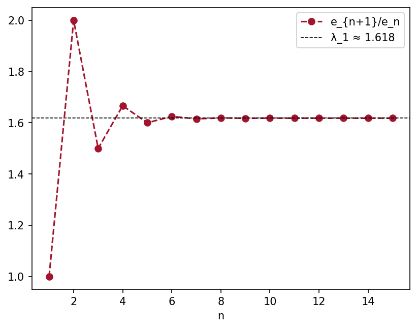
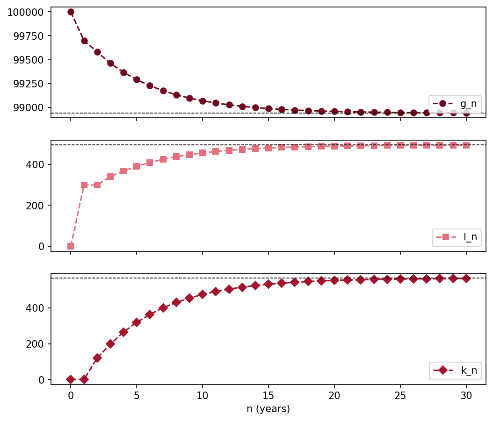
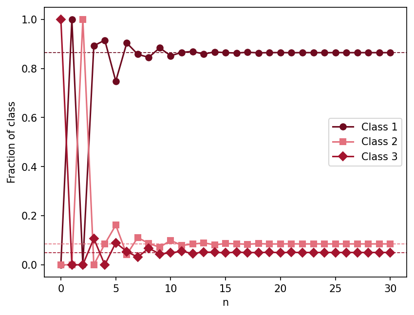
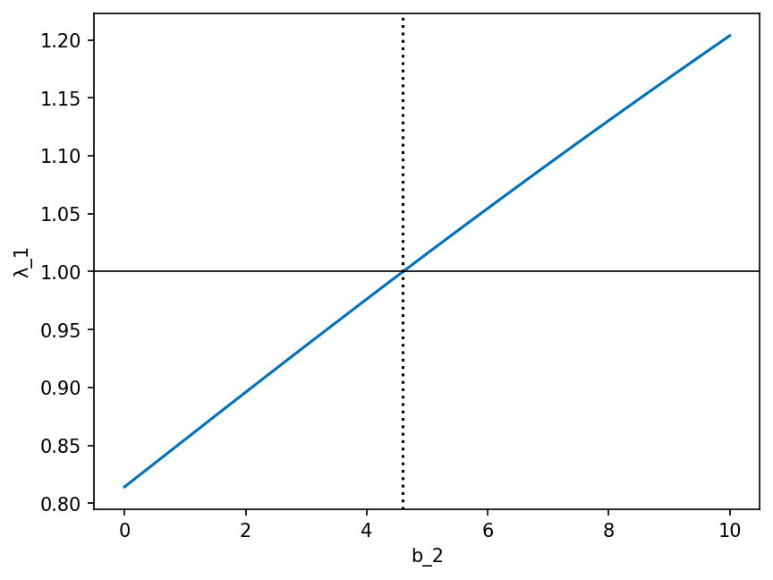

Chapter 2 · Discrete Dynamical Systems with Several Variables
2.3Eigenvalues and Long-Term Behavior
The solution xn = An x0 can be decomposed with eigenvalues and eigenvectors. In the long run the dominant eigenvalue λ1, the one of largest modulus, prevails: it determines whether the system grows, shrinks, or comes to rest, and its eigenvector gives the distribution among the components.
For each figure of the section you will find the program that produces it. Change parameters and initial values and observe what happens. Figure and equation numbers refer to the book.
Fig. 2.10
Quotient of consecutive Fibonacci numbers
A = (0 1; 1 1), λ1 = (1 + √5)/2
The quotient en+1/en settles at the dominant eigenvalue, the golden ratio 1.618… The program computes the eigenvalues with eigvals or eig.

# Fig. 2.10: Quotient of consecutive Fibonacci numbers (book, Section 2.3, Eq. 2.15)
# system j_{n+1} = e_n, e_{n+1} = e_n + j_n; the quotient e_{n+1}/e_n tends to the dominant eigenvalue (golden ratio)
# (c) 2026 Philipp Kügler · Program for the book "Dynamical Systems in the Life Sciences" · MIT License (see LICENSE)
using Printf, Plots, LinearAlgebra
A = [0 1;
1 1]
x = [1, 0] # (j_0, e_0): one young pair
e = [x[2]]
for k in 1:16
global x = A * x
push!(e, x[2])
end
q = e[3:end] ./ e[2:end-1]
println("eigenvalues of A: ", join([@sprintf("%.6f", l) for l in sort(eigvals(A))], " "))
println("e_{n+1}/e_n: ", join([@sprintf("%.6f", v) for v in q[end-3:end]], " "), " golden ratio: ", @sprintf("%.6f", (1 + sqrt(5)) / 2))
p = plot(1:length(q), q, ls = :dash, marker = :circle, color = RGB(0.64, 0.08, 0.18), label = "e_{n+1}/e_n", xlabel = "n")
hline!(p, [(1 + sqrt(5)) / 2], ls = :dash, color = :black, label = "λ₁ = 1.618")
display(p)% Fig. 2.10: Quotient of consecutive Fibonacci numbers (book, Section 2.3, Eq. 2.15)
% system j_{n+1} = e_n, e_{n+1} = e_n + j_n; the quotient e_{n+1}/e_n tends to the dominant eigenvalue (golden ratio)
% (c) 2026 Philipp Kügler · Program for the book "Dynamical Systems in the Life Sciences" · MIT License (see LICENSE)
A = [0 1;
1 1];
x = [1; 0]; % (j_0, e_0): one young pair
e = x(2);
for k = 1:16
x = A * x;
e(end + 1) = x(2);
end
q = e(3:end) ./ e(2:end-1);
fprintf('eigenvalues of A: %.6f %.6f\n', sort(eig(A)));
fprintf('e_{n+1}/e_n: '); fprintf('%.6f ', q(end-3:end)); fprintf(' golden ratio: %.6f\n', (1 + sqrt(5)) / 2);
n = 1:numel(q);
plot(n, q, '--o', 'Color', [0.64 0.08 0.18]); hold on
plot([1 n(end)], (1 + sqrt(5)) / 2 * [1 1], 'k--'); hold off
xlabel('n'); legend('e_{n+1}/e_n', '\lambda_1 = 1.618');# Fig. 2.10: Quotient of consecutive Fibonacci numbers (book, Section 2.3, Eq. 2.15)
# system j_{n+1} = e_n, e_{n+1} = e_n + j_n; the quotient e_{n+1}/e_n tends to the dominant eigenvalue (golden ratio)
# (c) 2026 Philipp Kügler · Program for the book "Dynamical Systems in the Life Sciences" · MIT License (see LICENSE)
import numpy as np
import matplotlib.pyplot as plt
A = np.array([[0, 1],
[1, 1]])
x = np.array([1, 0]) # (j_0, e_0): one young pair
e = [x[1]]
for n in range(16):
x = A @ x
e.append(x[1])
e = np.array(e, dtype=float)
q = e[2:] / e[1:-1]
lam = np.linalg.eigvals(A)
print("eigenvalues of A:", " ".join(f"{x:.6f}" for x in sorted(np.real(lam))))
print("e_{n+1}/e_n:", " ".join(f"{x:.6f}" for x in q[-4:]), " golden ratio:", f"{(1 + 5**0.5) / 2:.6f}")
n = np.arange(1, len(q) + 1)
plt.plot(n, q, "o--", color=(0.64, 0.08, 0.18), label="e_{n+1}/e_n")
plt.axhline((1 + 5**0.5) / 2, color="k", ls="--", lw=0.8, label="λ_1 ≈ 1.618")
plt.xlabel("n"); plt.legend()
plt.show()# Fig. 2.10: Quotient of consecutive Fibonacci numbers (book, Section 2.3, Eq. 2.15)
# system j_{n+1} = e_n, e_{n+1} = e_n + j_n; the quotient e_{n+1}/e_n tends to the dominant eigenvalue (golden ratio)
# (c) 2026 Philipp Kügler · Program for the book "Dynamical Systems in the Life Sciences" · MIT License (see LICENSE)
A <- matrix(c(0, 1,
1, 1), nrow = 2, byrow = TRUE)
x <- c(1, 0) # (j_0, e_0): one young pair
e <- x[2]
for (k in 1:16) { x <- A %*% x; e <- c(e, x[2]) }
q <- e[3:length(e)] / e[2:(length(e) - 1)]
cat("eigenvalues of A:", sprintf("%.6f", sort(eigen(A)$values)), "\n")
cat("e_{n+1}/e_n:", sprintf("%.6f", tail(q, 4)), " golden ratio:", sprintf("%.6f", (1 + sqrt(5)) / 2), "\n")
plot(seq_along(q), q, type = "o", lty = 2, pch = 16, col = rgb(0.64, 0.08, 0.18), xlab = "n", ylab = "")
abline(h = (1 + sqrt(5)) / 2, lty = 2)
legend("topright", legend = c("e_{n+1}/e_n", "lambda_1 = 1.618"), col = c(rgb(0.64, 0.08, 0.18), "black"), lty = 2, pch = c(16, NA))Output in the command window
eigenvalues of A: -0.618034 1.618034
e_{n+1}/e_n: 1.618056 1.618026 1.618037 1.618033 golden ratio: 1.618034Fig. 2.11
Disease progression with steady state
A x* = x*, x* ≈ (98940, 495, 565)
The dominant eigenvalue is 1. The corresponding eigenvector, scaled to 100,000 persons, is the steady state toward which the simulation tends.

# Fig. 2.11: Disease progression with steady state (book, Section 2.3, Eq. 2.8)
# The steady state x* = A x* is an eigenvector for the eigenvalue 1, scaled to 100000 persons
# (c) 2026 Philipp Kügler · Program for the book "Dynamical Systems in the Life Sciences" · MIT License (see LICENSE)
using Printf, Plots, LinearAlgebra
A = [0.997 0.6 0;
0.003 0 0.35;
0 0.4 0.65]
w, Vec = eigen(A)
println("eigenvalues: ", join([@sprintf("%.4f", l) for l in sort(real.(w))], " "))
i1 = argmin(abs.(w .- 1))
v = real.(Vec[:, i1]) # eigenvector for the eigenvalue 1
xs = v ./ sum(v) .* 100000
@printf("steady state x* = (%.0f, %.0f, %.0f)\n", xs...)
N = 30
X = zeros(3, N + 1); X[:, 1] = [100000, 0, 0]
for k in 1:N
X[:, k + 1] = A * X[:, k]
end
namen = ["g_n", "l_n", "k_n"]
farben = [RGB(0.43, 0.04, 0.12), RGB(0.89, 0.44, 0.49), RGB(0.64, 0.08, 0.18)]; zeichen = [:circle, :rect, :diamond]
bilder = [begin
b = plot(0:N, X[i, :], ls = :dash, marker = zeichen[i], color = farben[i], label = namen[i], legend = :right)
hline!(b, [xs[i]], ls = :dash, color = :black, label = "")
b
end for i in 1:3]
display(plot(bilder..., layout = (3, 1), size = (800, 700), xlabel = "n (years)"))% Fig. 2.11: Disease progression with steady state (book, Section 2.3, Eq. 2.8)
% The steady state x* = A x* is an eigenvector for the eigenvalue 1, scaled to 100000 persons
% (c) 2026 Philipp Kügler · Program for the book "Dynamical Systems in the Life Sciences" · MIT License (see LICENSE)
A = [0.997 0.6 0;
0.003 0 0.35;
0 0.4 0.65];
[V, D] = eig(A);
w = diag(D);
fprintf('eigenvalues: '); fprintf('%.4f ', sort(real(w))); fprintf('\n');
[~, i1] = min(abs(w - 1));
v = real(V(:, i1)); % eigenvector for the eigenvalue 1
xs = v / sum(v) * 100000;
fprintf('steady state x* = (%.0f, %.0f, %.0f)\n', xs);
N = 30;
X = zeros(3, N + 1); X(:, 1) = [100000; 0; 0];
for k = 1:N
X(:, k + 1) = A * X(:, k);
end
namen = {'g_n', 'l_n', 'k_n'};
farben = [0.43 0.04 0.12; 0.89 0.44 0.49; 0.64 0.08 0.18]; marker = 'osd';
for i = 1:3
subplot(3, 1, i);
plot(0:N, X(i, :), ['--' marker(i)], 'Color', farben(i, :)); hold on
plot([0 N], xs(i) * [1 1], 'k--'); hold off
legend(namen{i}, 'Location', 'southeast');
end
xlabel('n (years)');# Fig. 2.11: Disease progression with steady state (book, Section 2.3, Eq. 2.8)
# The steady state x* = A x* is an eigenvector for the eigenvalue 1, scaled to 100000 persons
# (c) 2026 Philipp Kügler · Program for the book "Dynamical Systems in the Life Sciences" · MIT License (see LICENSE)
import numpy as np
import matplotlib.pyplot as plt
A = np.array([[0.997, 0.6, 0],
[0.003, 0, 0.35],
[0, 0.4, 0.65]])
w, V = np.linalg.eig(A)
print("eigenvalues:", " ".join(f"{x:.4f}" for x in sorted(np.real(w))))
v = np.real(V[:, np.argmin(abs(w - 1))]) # eigenvector for the eigenvalue 1
xs = v / v.sum() * 100000
print("steady state x* = (%.0f, %.0f, %.0f)" % tuple(xs))
N = 30
X = np.zeros((N + 1, 3)); X[0] = [100000, 0, 0]
for n in range(N):
X[n + 1] = A @ X[n]
fig, axs = plt.subplots(3, 1, figsize=(8, 7), sharex=True)
farben = [(0.43, 0.04, 0.12), (0.89, 0.44, 0.49), (0.64, 0.08, 0.18)]
for i, (name, m) in enumerate(zip(["g_n", "l_n", "k_n"], "osD")):
axs[i].plot(np.arange(N + 1), X[:, i], "--", marker=m, color=farben[i], label=name)
axs[i].axhline(xs[i], color="k", ls="--", lw=0.8)
axs[i].legend(loc="lower right")
axs[2].set_xlabel("n (years)")
plt.show()# Fig. 2.11: Disease progression with steady state (book, Section 2.3, Eq. 2.8)
# The steady state x* = A x* is an eigenvector for the eigenvalue 1, scaled to 100000 persons
# (c) 2026 Philipp Kügler · Program for the book "Dynamical Systems in the Life Sciences" · MIT License (see LICENSE)
A <- matrix(c(0.997, 0.6, 0,
0.003, 0, 0.35,
0, 0.4, 0.65), nrow = 3, byrow = TRUE)
ev <- eigen(A)
cat("eigenvalues:", sprintf("%.4f", sort(Re(ev$values))), "\n")
i1 <- which.min(abs(ev$values - 1))
v <- Re(ev$vectors[, i1]) # eigenvector for the eigenvalue 1
xs <- v / sum(v) * 100000
cat(sprintf("steady state x* = (%.0f, %.0f, %.0f)\n", xs[1], xs[2], xs[3]))
N <- 30
X <- matrix(0, 3, N + 1); X[, 1] <- c(100000, 0, 0)
for (k in 1:N) X[, k + 1] <- A %*% X[, k]
namen <- c("g_n", "l_n", "k_n")
farben <- c(rgb(0.43, 0.04, 0.12), rgb(0.89, 0.44, 0.49), rgb(0.64, 0.08, 0.18)); zeichen <- c(16, 15, 18)
par(mfrow = c(3, 1), mar = c(4, 4, 1, 1))
for (i in 1:3) {
plot(0:N, X[i, ], type = "o", lty = 2, pch = zeichen[i], col = farben[i], xlab = if (i == 3) "n (years)" else "", ylab = "")
abline(h = xs[i], lty = 2)
legend("bottomright", legend = namen[i], col = farben[i], pch = zeichen[i], lty = 2)
}Output in the command window
eigenvalues: -0.1719 0.8189 1.0000
steady state x* = (98940, 495, 565)Fig. 2.12
Stable age distribution
b2 = 5: λ1 ≈ 1.0157
If the second age class also has offspring, there is a dominant eigenvalue. The fractions of the classes approach its eigenvector, the stable age distribution, and the population grows slowly.

# Fig. 2.12: Stable age distribution in the Leslie model (book, Section 2.3, Eq. 2.17)
# L with b_2 = 5: the fractions of the classes approach the eigenvector v_1 for the dominant eigenvalue lambda_1
# (c) 2026 Philipp Kügler · Program for the book "Dynamical Systems in the Life Sciences" · MIT License (see LICENSE)
using Printf, Plots, LinearAlgebra
L = [0 5 9;
0.1 0 0;
0 0.6 0]
w, Vec = eigen(L)
i1 = argmax(abs.(w))
v1 = real.(Vec[:, i1]); v1 = v1 ./ sum(v1)
@printf("dominant eigenvalue lambda_1 = %.4f\n", real(w[i1]))
@printf("stable age distribution v_1 = (%.3f, %.3f, %.3f)\n", v1...)
N = 30
X = zeros(3, N + 1); X[:, 1] = [0, 0, 1000]
for k in 1:N
X[:, k + 1] = L * X[:, k]
end
P = X ./ sum(X, dims = 1) # fractions of the classes
farben = [RGB(0.43, 0.04, 0.12), RGB(0.89, 0.44, 0.49), RGB(0.64, 0.08, 0.18)]; zeichen = [:circle, :rect, :diamond]
p = plot(xlabel = "n", ylabel = "Fraction of class")
for i in 1:3
plot!(p, 0:N, P[i, :], marker = zeichen[i], color = farben[i], label = "Class $i")
hline!(p, [v1[i]], ls = :dash, color = farben[i], label = "")
end
display(p)% Fig. 2.12: Stable age distribution in the Leslie model (book, Section 2.3, Eq. 2.17)
% L with b_2 = 5: the fractions of the classes approach the eigenvector v_1 for the dominant eigenvalue lambda_1
% (c) 2026 Philipp Kügler · Program for the book "Dynamical Systems in the Life Sciences" · MIT License (see LICENSE)
L = [0 5 9;
0.1 0 0;
0 0.6 0];
[V, D] = eig(L);
w = diag(D);
[~, i1] = max(abs(w));
v1 = real(V(:, i1)); v1 = v1 / sum(v1);
fprintf('dominant eigenvalue lambda_1 = %.4f\n', real(w(i1)));
fprintf('stable age distribution v_1 = (%.3f, %.3f, %.3f)\n', v1);
N = 30;
X = zeros(3, N + 1); X(:, 1) = [0; 0; 1000];
for k = 1:N
X(:, k + 1) = L * X(:, k);
end
P = X ./ sum(X, 1); % fractions of the classes
farben = [0.43 0.04 0.12; 0.89 0.44 0.49; 0.64 0.08 0.18]; marker = 'osd';
hold on
for i = 1:3
plot(0:N, P(i, :), ['-' marker(i)], 'Color', farben(i, :), 'DisplayName', sprintf('Class %d', i));
plot([0 N], v1(i) * [1 1], '--', 'Color', farben(i, :), 'HandleVisibility', 'off');
end
hold off; xlabel('n'); ylabel('Fraction of class'); legend('show');# Fig. 2.12: Stable age distribution in the Leslie model (book, Section 2.3, Eq. 2.17)
# L with b_2 = 5: the fractions of the classes approach the eigenvector v_1 for the dominant eigenvalue lambda_1
# (c) 2026 Philipp Kügler · Program for the book "Dynamical Systems in the Life Sciences" · MIT License (see LICENSE)
import numpy as np
import matplotlib.pyplot as plt
L = np.array([[0, 5, 9],
[0.1, 0, 0],
[0, 0.6, 0]])
w, V = np.linalg.eig(L)
i1 = np.argmax(abs(w))
v1 = np.real(V[:, i1]); v1 = v1 / v1.sum()
print(f"dominant eigenvalue lambda_1 = {np.real(w[i1]):.4f}")
print("stable age distribution v_1 = (%.3f, %.3f, %.3f)" % tuple(v1))
N = 30
X = np.zeros((N + 1, 3)); X[0] = [0, 0, 1000]
for n in range(N):
X[n + 1] = L @ X[n]
P = X / X.sum(axis=1, keepdims=True) # fractions of the classes
farben = [(0.43, 0.04, 0.12), (0.89, 0.44, 0.49), (0.64, 0.08, 0.18)]
for i, m in enumerate("osD"):
plt.plot(np.arange(N + 1), P[:, i], "-", marker=m, color=farben[i], label=f"Class {i + 1}")
plt.axhline(v1[i], color=farben[i], ls="--", lw=0.8)
plt.xlabel("n"); plt.ylabel("Fraction of class"); plt.legend()
plt.show()# Fig. 2.12: Stable age distribution in the Leslie model (book, Section 2.3, Eq. 2.17)
# L with b_2 = 5: the fractions of the classes approach the eigenvector v_1 for the dominant eigenvalue lambda_1
# (c) 2026 Philipp Kügler · Program for the book "Dynamical Systems in the Life Sciences" · MIT License (see LICENSE)
L <- matrix(c(0, 5, 9,
0.1, 0, 0,
0, 0.6, 0), nrow = 3, byrow = TRUE)
ev <- eigen(L)
i1 <- which.max(Mod(ev$values))
v1 <- Re(ev$vectors[, i1]); v1 <- v1 / sum(v1)
cat(sprintf("dominant eigenvalue lambda_1 = %.4f\n", Re(ev$values[i1])))
cat(sprintf("stable age distribution v_1 = (%.3f, %.3f, %.3f)\n", v1[1], v1[2], v1[3]))
N <- 30
X <- matrix(0, 3, N + 1); X[, 1] <- c(0, 0, 1000)
for (k in 1:N) X[, k + 1] <- L %*% X[, k]
P <- sweep(X, 2, colSums(X), "/") # fractions of the classes
farben <- c(rgb(0.43, 0.04, 0.12), rgb(0.89, 0.44, 0.49), rgb(0.64, 0.08, 0.18)); zeichen <- c(16, 15, 18)
plot(NULL, xlim = c(0, N), ylim = c(0, 1), xlab = "n", ylab = "Fraction of class")
for (i in 1:3) { lines(0:N, P[i, ], type = "o", pch = zeichen[i], col = farben[i]); abline(h = v1[i], lty = 2, col = farben[i]) }
legend("topright", legend = sprintf("Class %d", 1:3), col = farben, pch = zeichen, lty = 1)Output in the command window
dominant eigenvalue lambda_1 = 1.0157
stable age distribution v_1 = (0.865, 0.085, 0.050)Fig. 2.13
Dominant eigenvalue as a function of b2
R = b1 + s1 b2 + s1 s2 b3
λ1 exceeds 1 exactly where the number R of offspring of a newborn exceeds 1, at b2 = 4.6.

# Fig. 2.13: Dominant eigenvalue of the Leslie model as a function of b_2 (book, Section 2.3, Eq. 2.19)
# b_1 = 0, b_3 = 9, s_1 = 0.1, s_2 = 0.6; for R = b_1 + s_1 b_2 + s_1 s_2 b_3 = 1, i.e. b_2 = 4.6, lambda_1 = 1
# (c) 2026 Philipp Kügler · Program for the book "Dynamical Systems in the Life Sciences" · MIT License (see LICENSE)
using Printf, Plots, LinearAlgebra
b2 = range(0, 10, length = 201)
lam = [maximum(abs.(eigvals([0 b 9; 0.1 0 0; 0 0.6 0]))) for b in b2]
@printf("b_2 with R = 1: %.2f\n", (1 - 0.54) / 0.1)
@printf("lambda_1 at b_2 = 4.6: %.6f\n", maximum(abs.(eigvals([0 4.6 9; 0.1 0 0; 0 0.6 0]))))
p = plot(b2, lam, color = RGB(0, 0.447, 0.741), lw = 2, legend = false, xlabel = "b_2", ylabel = "λ₁")
hline!(p, [1], color = :black); plot!(p, [4.6, 4.6], [0.75, 1.2], ls = :dot, color = :black)
display(p)% Fig. 2.13: Dominant eigenvalue of the Leslie model as a function of b_2 (book, Section 2.3, Eq. 2.19)
% b_1 = 0, b_3 = 9, s_1 = 0.1, s_2 = 0.6; for R = b_1 + s_1 b_2 + s_1 s_2 b_3 = 1, i.e. b_2 = 4.6, lambda_1 = 1
% (c) 2026 Philipp Kügler · Program for the book "Dynamical Systems in the Life Sciences" · MIT License (see LICENSE)
b2 = linspace(0, 10, 201);
lam = zeros(size(b2));
for i = 1:numel(b2)
lam(i) = max(abs(eig([0 b2(i) 9; 0.1 0 0; 0 0.6 0])));
end
fprintf('b_2 with R = 1: %.2f\n', (1 - 0.54) / 0.1);
fprintf('lambda_1 at b_2 = 4.6: %.6f\n', max(abs(eig([0 4.6 9; 0.1 0 0; 0 0.6 0]))));
plot(b2, lam, 'Color', [0 0.447 0.741]); hold on
plot([0 10], [1 1], 'k-'); plot([4.6 4.6], [0.75 1.2], 'k:'); hold off
xlabel('b_2'); ylabel('\lambda_1');# Fig. 2.13: Dominant eigenvalue of the Leslie model as a function of b_2 (book, Section 2.3, Eq. 2.19)
# b_1 = 0, b_3 = 9, s_1 = 0.1, s_2 = 0.6; for R = b_1 + s_1 b_2 + s_1 s_2 b_3 = 1, i.e. b_2 = 4.6, lambda_1 = 1
# (c) 2026 Philipp Kügler · Program for the book "Dynamical Systems in the Life Sciences" · MIT License (see LICENSE)
import numpy as np
import matplotlib.pyplot as plt
b2 = np.linspace(0, 10, 201)
lam = [max(abs(np.linalg.eigvals(np.array([[0, b, 9], [0.1, 0, 0], [0, 0.6, 0]])))) for b in b2]
R = 0.1 * b2 + 0.1 * 0.6 * 9 # net reproductive number
print(f"b_2 with R = 1: {(1 - 0.54) / 0.1:.2f}")
print(f"lambda_1 at b_2 = 4.6: {max(abs(np.linalg.eigvals(np.array([[0, 4.6, 9], [0.1, 0, 0], [0, 0.6, 0]])))):.6f}")
plt.plot(b2, lam, color=(0, 0.447, 0.741))
plt.axhline(1, color="k", lw=0.8); plt.axvline(4.6, color="k", ls=":")
plt.xlabel("b_2"); plt.ylabel("λ_1")
plt.show()# Fig. 2.13: Dominant eigenvalue of the Leslie model as a function of b_2 (book, Section 2.3, Eq. 2.19)
# b_1 = 0, b_3 = 9, s_1 = 0.1, s_2 = 0.6; for R = b_1 + s_1 b_2 + s_1 s_2 b_3 = 1, i.e. b_2 = 4.6, lambda_1 = 1
# (c) 2026 Philipp Kügler · Program for the book "Dynamical Systems in the Life Sciences" · MIT License (see LICENSE)
b2 <- seq(0, 10, length.out = 201)
lam <- sapply(b2, function(b) max(Mod(eigen(matrix(c(0, b, 9, 0.1, 0, 0, 0, 0.6, 0), nrow = 3, byrow = TRUE))$values)))
cat(sprintf("b_2 with R = 1: %.2f\n", (1 - 0.54) / 0.1))
cat(sprintf("lambda_1 at b_2 = 4.6: %.6f\n", max(Mod(eigen(matrix(c(0, 4.6, 9, 0.1, 0, 0, 0, 0.6, 0), nrow = 3, byrow = TRUE))$values))))
plot(b2, lam, type = "l", col = rgb(0, 0.447, 0.741), lwd = 2, xlab = "b_2", ylab = "lambda_1")
abline(h = 1); lines(c(4.6, 4.6), c(0.75, 1.2), lty = 3)Output in the command window
b_2 with R = 1: 4.60
lambda_1 at b_2 = 4.6: 1.000000Try it in the browser · no installation
Leslie model with three age classes
Set the birth and survival rates. Whether the population grows or dies out is decided by the positive eigenvalue λ1 of the Leslie matrix, equivalently by the number R.